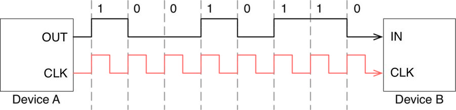
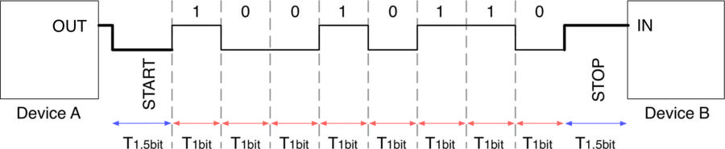
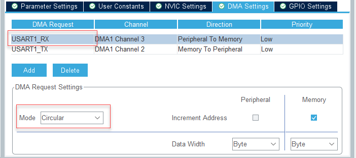
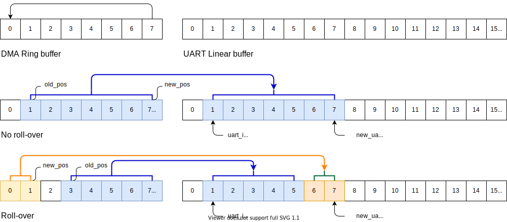

Almost every microcontroller provides at least one UART peripheral, and this protocol seems to be a must-have supported feature for any project as UART is widely used for debugging, logging, data exchange, and for firmware update. Serialization also be used in many application, especially in continuous streaming, mostly working in DMA more, some in Interrupt mode, and rarely in Polling mode.
Universal Synchronous/Asynchronous Receiver/Transmitter interface, also simply known as USART, is a device that translates a parallel sequence of bits (usually grouped in a byte) in a continuous stream of signals flowing on a single wire.
When the information flows between two devices inside a common channel, both devices (as the sender and also the receiver) have to agree on the timing, that defines how long it takes to transmit each individual bit of the information.
In a synchronous transmission, the sender and the receiver share a common clock generated by one of the two devices
Shared clock in synchronous USART
In an asynchronous transmission, the clock line is omitted, and both devices have an internal clock source and a mechanism to detect start/ stop bit.
One line of data in asynchronous USART
In a bi-direction communication, it needs a pair of lines for Transmitter (TX) and Receiver (RX):
The presence of a dedicated clock line, or a common agreement about transmission frequency, does not guarantee that the receiver of a byte stream is able to process them at the same transmission rate of the master.
For this reason, some communication standards, like the RS232 and the RS485, provide the possibility to use a dedicated Hardware Flow Control line. For example, two devices communicating using the RS232 interface can share two additional lines, named Request To Send (RTS) and Clear To Send (CTS): the sender sets its RTS, which signals the receiver to begin monitoring its data input line. When ready for data, the receiver will raise its complementary line, CTS, which signals the sender to start sending data, and for the sender to begin monitoring the slave’s data output line.
A data word (7, 8 or 9 bits) with the least significant bit first
A 0.5, 1, 1.5, or 2 stop bits indicating that the frame is complete
By default, the signal (TX or RX) is in low state during the start bit. It is in high state during the stop bit. These values can be inverted, separately for each signal, through polarity configuration control.
An Idle character is interpreted as an entire frame of “1”s (the number of “1”s includes the number of stop bits).
A Break character is interpreted on receiving “0”s for a frame period. At the end of the break frame, the transmitter inserts 2 stop bits.
The choice of the clock source is done through the Clock Control system (see Section Reset and clock control (RCC)). The clock source must be chosen before enabling the USART (by setting the UE bit).
Choosing LSE or HSI as clock source may allow the USART to receive data while the MCU is in low-power mode.
Clock source is used to do oversampling by 16 or by 8 to detect the start bit. It samples the RX line and try to detect a falling edge and following patterns of zeros.
Baud rate determines the speed of transmitting and receiving, as the speed depends on the clock source and USARTDIV value.
USARTDIV is an unsigned fixed point number that is coded on the USART_BRR register.
When OVER8 = 0, BRR = USARTDIV.
When OVER8 = 1:
BRR[2:0] = USARTDIV[3:0] shifted 1 bit to the right.
BRR[3] must be kept cleared.
BRR[15:4] = USARTDIV[15:4].
Example: To obtain 9600 baud with core clock frequency at 8 MHz.
In case of oversampling by 16: BRR = USARTDIV = 8 000 000/9600 = 833d = 0341h
In case of oversampling by 8: USARTDIV = 2 * 8 000 000/9600 = 1666,66 (~1667d) = 683h BRR[3:0] = 3h >> 1 = 1h BRR = 0x681
Auto baud rate detection
The USART is able to detect and automatically set the USART_BRR register value based on the reception of one character. Automatic baud rate detection is useful under two circumstances:
The communication speed of the system is not known in advance
The system is using a relatively low accuracy clock source and this mechanism allows the correct baud rate to be obtained without measuring the clock deviation.
Before activating the auto baud rate detection, the auto baud rate detection mode must be chosen. There are various modes based on different character patterns.
Prior to activating auto baud rate detection, the USART_BRR register must be initialized by writing a non-zero baud rate value.
In multiprocessor communication, the following bits are to be kept cleared:
LINEN bit in the USART_CR2 register,
HDSEL, IREN and SCEN bits in the USART_CR3 register.
It is possible to perform multiprocessor communication with the USART (with several USARTs connected in a network). For instance one of the USARTs can be the master, its TX output connected to the RX inputs of the other USARTs. The others are slaves, their respective TX outputs are logically ANDed together and connected to the RX input of the master.
The Hardware Abstract Layer (HAL) is designed so that it abstracts from the specific peripheral memory mapping. But, it also provides a general and more user-friendly way to configure the peripheral, without forcing the programmers to now how to configure its registers in detail.
This project aims to learn how to configure USART via STM32CubeIDE and STM32CubeMX in polling mode.
In polling mode, also called blocking mode, the main application, or one of its threads, synchronously waits for the data transmission and reception. This is the simplest form of data communication using this peripheral, and it can be used when the transmit rate is not too much low and when the UART is not used as critical peripheral.
Requirements:
Increase a counter by 1 and print its value to UART1 every second
Get user commands:
stop to pause increasing the counter
resume to resume increasing the counter
Target board:
Any board which has STM32 MCUs. This tutorial will be using the STM32F0 Discovery board, which features an STM32F051R8 Cortex-M0 MCU.
When generate code from configs, there are some noticeable code blocks:
Peripheral instance
IDE will add an instance handler for the USART1 module in main.c. This instance will be used for manage USART1 peripheral then it should be global access:
UART_HandleTypeDefhuart1;
Initializing functions
The function SystemClock_Config() is included to set up the system clock, bus clocks. In addition, it will set the clock source for the USART1:
voidSystemClock_Config(void){RCC_OscInitTypeDefRCC_OscInitStruct={0};RCC_ClkInitTypeDefRCC_ClkInitStruct={0};RCC_PeriphCLKInitTypeDefPeriphClkInit={0};/** Initializes the RCC Oscillators according to the specified parameters in the RCC_OscInitTypeDef structure. */RCC_OscInitStruct.OscillatorType=RCC_OSCILLATORTYPE_HSI;RCC_OscInitStruct.HSIState=RCC_HSI_ON;RCC_OscInitStruct.HSICalibrationValue=RCC_HSICALIBRATION_DEFAULT;RCC_OscInitStruct.PLL.PLLState=RCC_PLL_ON;RCC_OscInitStruct.PLL.PLLSource=RCC_PLLSOURCE_HSI;RCC_OscInitStruct.PLL.PLLMUL=RCC_PLL_MUL12;RCC_OscInitStruct.PLL.PREDIV=RCC_PREDIV_DIV1;if(HAL_RCC_OscConfig(&RCC_OscInitStruct)!=HAL_OK){Error_Handler();}/** Initializes the CPU, AHB and APB buses clocks */RCC_ClkInitStruct.ClockType=RCC_CLOCKTYPE_HCLK|RCC_CLOCKTYPE_SYSCLK|RCC_CLOCKTYPE_PCLK1;RCC_ClkInitStruct.SYSCLKSource=RCC_SYSCLKSOURCE_PLLCLK;RCC_ClkInitStruct.AHBCLKDivider=RCC_SYSCLK_DIV1;RCC_ClkInitStruct.APB1CLKDivider=RCC_HCLK_DIV1;if(HAL_RCC_ClockConfig(&RCC_ClkInitStruct,FLASH_LATENCY_1)!=HAL_OK){Error_Handler();}PeriphClkInit.PeriphClockSelection=RCC_PERIPHCLK_USART1;PeriphClkInit.Usart1ClockSelection=RCC_USART1CLKSOURCE_PCLK1;if(HAL_RCCEx_PeriphCLKConfig(&PeriphClkInit)!=HAL_OK){Error_Handler();}}
The function MX_USART1_UART_Init() initializes the USART1 instance with the values put into the initial struct. This function, at the end, calls to HAL_UART_Init() which is an HAL function to check the initial parameters and finally calls to HAL_UART_MspInit() to do low-level configs.
The function HAL_UART_MspInit() is generated in stm32f0xx_hal_msp.c to override the function declared in HAL Lib. This low-level config will set up the peripheral clocks, and set alternative functions on GPIO pins.
With generated code, just need to use HAL_UART_Transmit() function to send a buffer over the USART instance. Let’s create a buffer, a counter variable, and make a message to send every second.
Because STM32F0 Discovery does not have a Virtual COM port on ST-LINK/V2, so use a TTL-to-USB converter go get UART data. Connect pins PA9 and PA10 to UART terminal on PC. It’s recommend to check the voltage because MCU board is running at 3.3V while PC USB or COM port might be running at 5V.
Another option is to use an Arduino Uno board with RESET pin connected to GND, and use its TX, RX pins which are connected to the Arduino Virtual COM port.
Build and run the code on the target board, and open a COM terminal on PC to see the message from the target board. Use a digital logic analyzer to see raw bits transferred in RX and TX pins.
It’s hard to input correct command because the timeout behavior may break the flow, and the number of remaining characters is not predictable.
Timeout mechanism
It is important to remark that the timeout mechanism offered used in the receiving function works only if the HAL_IncTick() routine is called every 1ms, as done by the code generated by STM32CubeMX (the function that increments the HAL tick counter is called inside the SysTick timer ISR).
Every USART peripheral provides the interrupts listed below:
Interrupt Event
Event Flag
Enable Control Bit
Transmit Data Register Empty
TXE
TXEIE
Clear To Send (CTS) flag
CTS
CTSIE
Transmission Complete
TC
TCIE
Received Data Ready to be Read
RXNE
RXNEIE
Overrun Error Detected
ORE
RXNEIE
Idle Line Detected
IDLE
IDLEIE
Parity Error
PE
PEIE
Break Flag
LBD
LBDIE
Noise Flag, Overrun error and Framing Error in multi buffer communication
NF or ORE or FE
EIE
These events generate an interrupt if the corresponding to the Enable Control Bit is set. However, STM32 MCUs are designed so that all these IRQs are bound to just one ISR for every USART peripheral. It is up to the user code to analyze the corresponding Event Flag to infer which interrupt has generated the request.
The STM32CubeHAL is designed to automatically do that job. Then user is warned about the interrupt thanks to a series of callback functions invoked by the HAL_UART_IRQHandler().
From a technical point of view, there is not so much difference between UART transmission in polling and in interrupt mode. Both the methods transfer an array of bytes using the UART Data Register (DR) with the following algorithm:
For data transmission, place a byte inside the USART->DR register and wait until the Transmit Data Register Empty (TXE) flag is asserted true.
For data reception, wait until the Received Data Ready to be Read (RXNE) is asserted true, and then store the content of the USART->DR register inside the application memory.
The difference between the two methods consists in how they wait for the completion of data transmission:
In polling mode, the HAL_UART_Receive() / HAL_UART_Transmit() functions are designed so that it waits for the corresponding event flag to be set, for every byte of data.
In interrupt mode, the HAL_UART_Receive_IT() / HAL_UART_Transmit_IT() functions are designed so that they do not wait for data transmission completion, but the job to place a new byte inside the DR register, or to load its content inside the application memory, is accomplished by the ISR routine when the RXNEIE / TXEIE interrupt is generated.
The interrupt handler is added to stm32f0xx_it.c file too. Trace the function HAL_UART_IRQHandler() to understand about how it processes the data. Basically, it checks the error, check the state, and mode of the USART instance; then it save or transfer data on RX or TX wire.
The above code will never work correctly, since each call to the function HAL_UART_Transmit_IT() is much faster than the UART transmission, and the subsequent calls to the HAL_UART_Transmit_IT() will fail as it will see that UART is in the Busy state.
If speed is not a strict requirement for the application, and the use of the HAL_UART_Transmit_IT() is limited to few parts of the application, the above code could be rearranged in the following way:
When all data in the buffer are sent, HAL library will call to a callback function named HAL_UART_TxCpltCallback() to notify about the end of the transmission. There is no callback when half of data is transferred . This function can be overridden to do something after the buffer is transmitted.
Next step is to read data using interrupt with the function HAL_UART_Receive_IT(). Because its unknown time when a character comes, so the buffer for receiving will be filled in at anytime, even when buffer is being used in the sprinf() function, therefore, should use a new buffer to store received data, e.g. command.
When the receiver gets enough characters, it will fire an interrupt to run the HAL_UART_RxCpltCallback() function. That function can be overridden to handle received data in the main:
The above implementation has an issue: The receiving interrupt only is fired when it receives enough number of characters. In the above example, enter stopxx for stop command will work, but stop will never do.
To fix this, set the receive mode to get only one byte at a time, then check for the new line / line feed\n or carriage return\r character to to determine input sentences. However, this will lead to run the interrupt handler many times if the incoming data rate is high.
Here is an example to handle every byte in the Interrupt mode:
Received one byte at a time
Check the received by with the new line\n character to separate strings
Call Receive function again to listen to a new character
This approach can be optimized more by not using the HAL function (both HAL_UART_Receive_IT() and HAL_UART_IRQHandler()), but by setting up UART_IT_RXNE (Received Data Not Empty) interrupt and then handle this interrupt manually in the USART1_IRQHandler() ISR.
The DMA can be used to transfer data in or out through an UART interface. However, DMA still needs to know how many bytes of data should be exchanged. In case of transmitting, it is easy to calculate the length of data, but in case of receiving, it may be unknown length of data.
Go to USART1 module, select DMA Settings tab and Add two DMA requests:
USART1_TX:
This DMA Request has direction of Memory to Peripheral, it means DMA processor will read data from Memory and write to the USART1 Transmit Data Register, therefore, only Memory Address will be increased
USART1_RX:
This DMA Request has direction of Peripheral to Memory, it means DMA processor will read data from USART1 Receive Data Register and write to Memory, therefore, only Memory Address will be increased
DMA only works when the peripheral’s interrupt is enabled, as it needs triggered from the peripheral. Make sure to enable USART1 global / wake-up interrupts through the external interrupt line.
Note that STM32CubeMX automatically enable DMA interrupts. To disable it, go to NVIC module under the System Core category.
After generating code, there is a new function MX_DMA_Init() added to the main.c file to initialize the DMA module:
Inside the HAL_UART_MspInit() function, there are calls to initialize DMA instances for USART1_TX and USART1_RX, and finally links of DMA instances with the USART instance with the function __HAL_LINKDMA.
There is also an implementation for DMA interrupt in the file stm32f0xx_it.c which calls to the HAL_DMA_IRQHandler() function.
There is no default callback for DMA. User has to set the callbacks manually, as described in the DMA Interrupts section. However, HAL functions will assign a callback when they need to handle an interrupt.
There are two interrupts will be fired for transmission, which are helpful when sending a huge amount of data: DMA notifies application to start loading new data into the first half of the buffer after the TxHalfCpltCallback is fired, while the second half of the buffer is being transmitted by the DMA; then application can load the new data into the second half of the buffer after the TxCpltCallback is fired, while the first half is being transmitted.
Using DMA mode can significantly resude the number of UART interrupts, comparing to using Interrupt mode. If there is a variable to keep track of the numbers of UART interrupts, for example in the below code, this number will be increased for every bytes in the transmitting buffer in Interrupt mode (each byte sent causes an interrupt to load the next byte). However, in DMA mode, there is only one interrupt added only when the buffer is completely transfered.
Normally, when calling to HAL_UART_Receive_DMA(), the DMA module will stop transferring data when it counts enough bytes set in the parameters. There is the Circular mode that makes DMA continues get data and fills into memory like a ring buffer.
Go back to the DMA Settings tab of the USART1 module to set the mode of USART1_RX request to Circular.
Enable Circular mode for DMA on USART1_RX
Then create a buffer for receiving data, and start DMA Request in the main function:
By calling the HAL_UART_Receive_DMA() function, USART1_RX DMA instance will get some callback functions assigned to its Half-transfer and Full-Transfer callbacks. Refer to the function UART_Start_Receive_DMA() for more details.
It is possible to configure DMA to transfer one byte at a time and call to an interrupt function to handle the newly received character like in Interrupt mode, but it wastes of resource and performance. However, if application lets DMA to notify only then it receives enough the required number of characters, sometimes there is no notification sent.
Assume that application expects to receive 20 chars, but UART only receives 14 chars:
Application would be notified when 10 bytes received by Half-Transfer event
Application would never be notified the rest of 4 bytes has arrived
If UART get more chars, application would be nofified by Full-Transfer event but some chars may be left over
Most of STM32 series have USARTs with IDLE Line detection. If IDLE Line detection is not available, some of them have Receiver Timeout feature with programmable delay. IDLE line detection (or Receiver Timeout) can trigger USART interrupt when receive line is steady without any communication for at least 1 character for reception.
IDLE Detection
Right after enable the UART, the IDLE bit in Interrupt Status Register ISR will be set. However, the interrupt for IDLE detection only gets fired when the bit IDLEIE is set on the Control Register CRx. Therefore, the IDLE interrupt always fire up once rigth after the bit IDLEIE is set.
To clear the IDLE interrupt status, either set the IDLECF in the Clear Register or do a read sequence on SR and DR registers. Refer to the Reference Manual documents to get more detail.
When IDLE dection is enable, make sure the RX line is not floating to prevent the IDLE flag from being set continuously.
DMA RX and IDLE Line detection
The good combination for using DMA to get unknown length of data is to use DMA in Circular mode, with big enough memory buffer, then use DMA Half-Transfer, Full-Transfer and the IDLE line detection to notify application to process received data. HAL DMA Receiving function automatically notifies the application by calling HAL_UART_RxHalfCpltCallback() and HAL_UART_RxCpltCallback(). Therefore, it is only needed to override the USART1_IRQHandler() function. To more simple and still left HAL Handler processes other cases, it is better to add a small code just to check the IDLE flag and process received data before handing over the interrupt to original HAL_UART_IRQHandler() function.
stm32f0xx_it.c
voidUSART1_IRQHandler(void){if(((&huart1)->Instance->ISR&UART_FLAG_IDLE)!=0&&((&huart1)->Instance->CR1&USART_CR1_IDLEIE)!=0){__HAL_UART_CLEAR_IDLEFLAG(&huart1);HAL_UART_RxCpltCallback(&huart1);}// pass the work to HAL functionHAL_UART_IRQHandler(&huart1);}
Due to DMA buffer is a Ring buffer with small number of bytes, it is necessary to copy received bytes from DMA buffer to a bigger UART buffer. There are 2 indexes to mark the bytes position in DMA buffer: new_pos at the last received byte, and old_pos at last processed byte. There is one index uart_index to mark the last byte in the UART buffer.
Visualization of memory copy between DMA buffer and UART buffer
In DMA buffer, if the new_pos is bigger than the old_pos, it means there is no roll-over, application can copy bytes [old_pos:new_pos] to the UART buffer.
In DMA buffer, if the new_pos is less than the old_pos, it means there is a roll-over, application can copy bytes [old_pos:max] and [0:new_pos] to the UART buffer.
In UART buffer, when buffer is full, it does not get any more character, only character new line\n will reset the index to 0
To get the new_pos index, aka. Number of received bytes, use the register CNDTR of the DMA instance. Read more about “DMA channel x number of data register (DMA_CNDTRx and DMA2_CNDTRx)” section in the Reference Manual document.
Here is the implementation example for the above solution of processing the received data:
#define UART_BUFFER_MAX 64charuart_buffer[UART_BUFFER_MAX]={0};size_tuart_buffer_idx=0;charuart_new_string=0;voidUART_RX_Process(constvoid*data,size_tlen){for(inti=0;i<len;i++){charc=((char*)data)[i];if(uart_buffer_idx<UART_BUFFER_MAX-2){uart_buffer[uart_buffer_idx++]=c;uart_buffer[uart_buffer_idx]='\0';}if(c=='\n'){uart_buffer_idx=0;uart_new_string=1;}}}voidUART_RX_Check(DMA_HandleTypeDef*hdma){staticsize_told_pos=0;size_trx_pos=DMA_BUFFER_MAX-hdma->Instance->CNDTR;if(rx_pos!=old_pos){// new dataif(rx_pos>old_pos){// no overflowUART_RX_Process(&rx_buffer[old_pos],rx_pos-old_pos);}else{// overflowUART_RX_Process(&rx_buffer[old_pos],DMA_BUFFER_MAX-old_pos);if(rx_pos>0){// run upUART_RX_Process(&rx_buffer[old_pos],rx_pos);}}old_pos=rx_pos;}}intmain(void){while(1){if(uart_new_string==1){uart_new_string=0;if(strncmp(uart_buffer,"stop",4)==0){...}}}}
This tutorial only show a method to process variable string length in a continuous byte stream. The function UART_RX_Process() should be modified to handle different streaming format.
Compile and run with variable string length to find how it works. Below captured image was in a debug section to see how many IDLE interrupts are called, how received bytes are saved into the rx_buffer and to monitor the uart_buffer.